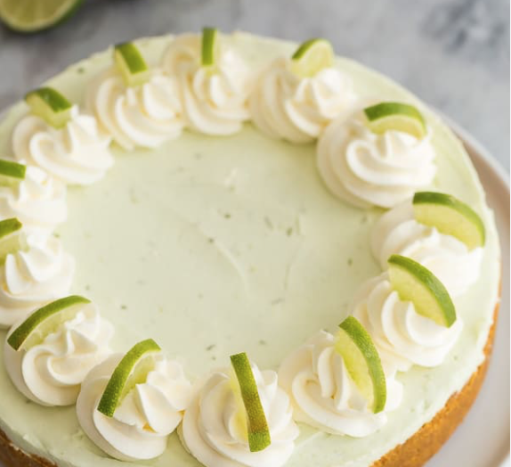

How to Build the Perfect Lime Cheesecake
Home
Photo Gallery
Contact
About Us

Ingredients
Crust:
2 1/2 cups graham crumbs (350)
1/2 cup melted unsalted butter
Filling:
3 packages full fat cream cheese room temperature (24oz/750g)
1 1/2 cups powdered sugar (200 grams)
1/4 cup key lime or lime juice (2 limes)
1-2 tablespoon key lime or lime zest (2 regular limes) Depending on your tastes
1 teaspoon vanilla
3/4 cup heavy whipping cream cold, 30-35% fat ONLY
sweetened whipped cream for garnish
Instructions:
Combine graham crumbs and butter and press firmly into the bottom of an 8″ or 9″ pan and about 1″ up the sides.
In a large bowl, beat cream cheese with an electric mixer until smooth.
Add 1 ½ cups sugar, lime juice, lime zest and vanilla and beat until smooth.
Whip the cream in a separate bowl with an electric mixer until stiff. Fold the whipped cream into the cream cheese mixture carefully.
Spread into prepared pan, cover and refrigerate for at least 5-6 hours or until firm.
Other Inspiration